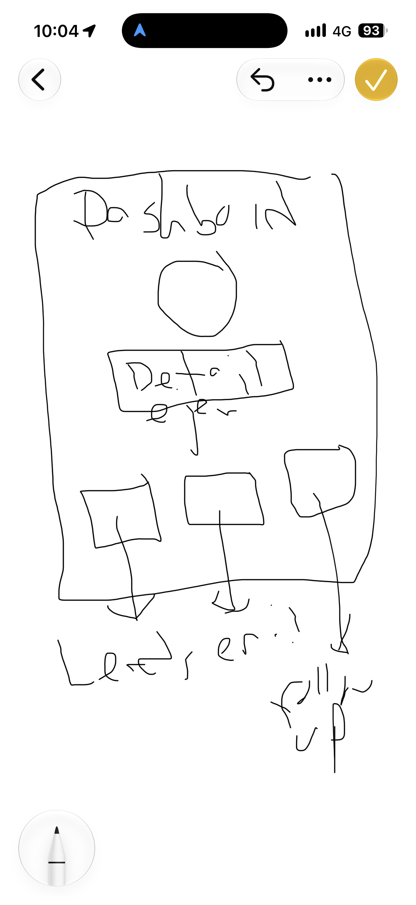

Apps untuk ejen mohon taklimat ke agensi kerajaan & swasta. Ejen isi maklumat agensi, apps jana surat PDF, ejen hantar email, buat follow up, dan rekod sama ada dapat taklimat atau tak berjaya. Ramai ejen guna serentak, jadi satu agensi hanya boleh dipegang oleh seorang ejen sahaja.
| Status | Maksud | Tindakan ejen |
|---|---|---|
| SURAT SIAP | Borang diisi, PDF dah dijana | Download PDF, email ke agensi, tekan DAH EMAIL |
| DAH EMAIL | Surat dah dihantar, tunggu jawapan | Tekan FOLLOW UP + tulis nota (berapa kali pun) |
| DAPAT TAKLIMAT | Agensi setuju, ada tarikh | Isi Tarikh, Masa, Penceramah |
| TAK BERJAYA | Agensi tolak / tiada jawapan | Masuk senarai Tak Berjaya · agensi terbuka semula |
| DILEPASKAN | 45 hari tiada tindakan | Automatik · agensi terbuka semula |

Surat_Taklimat_PKD_Mersing.pdf| Jadual | Medan |
|---|---|
| Ejen | nama penuh, No. IC, telefon, email, kod ejen (unik), gambar, tandatangan (PNG), peranan (ejen / admin / admin utama), status akaun (menunggu/aktif/ditolak/digantung), diluluskan oleh & tarikh |
| Permohonan | salinan PDF surat (beserta tandatangan masa dijana), nama agensi, nama agensi (dinormalkan, unik), alamat, telefon, PIC, email, ejen, status, tarikh dijana, tarikh dah email |
| Follow Up | permohonan, kali ke-N, cara, nota, tarikh/masa, tarikh ingatan |
| Taklimat | permohonan, tarikh, masa, penceramah, lokasi, peserta |
| Tak Berjaya | permohonan, sebab, nota, tarikh |